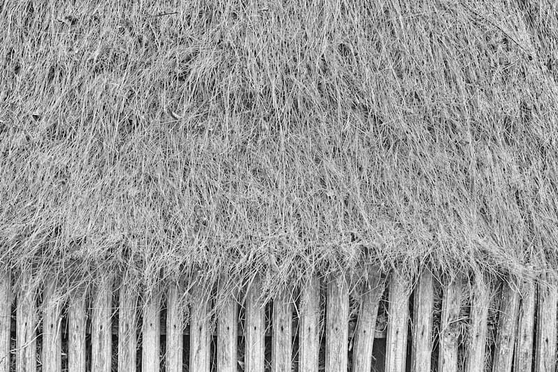

Nimeni nu mai poate ignora, astăzi, că țiganii au devenit o problemă a Europei, cu atât mai mult cu cât sunt considerați minoritatea cea mai numeroasă din această parte a lumii. O minoritate nomadă care, tocmai de aceea, nu a avut niciodată un stat național. Din acest punct de vedere, țiganii se diferențiază și de kurzi, și de evrei. Primii sunt sedentari în câteva state din Orientul Mijlociu, dar nu li s-a îngăduit să aibă un stat al lor, ceilalți, după o istorie remarcabilă în același spațiu, au fost nevoiți să plece într-o diaspora de aproape două milenii, supraviețuind prin forța religiei lor și reușind să-și refacă statul național grație proiectului sionist și conjuncturii istorice provocate de Al Doilea Război Mondial.
În schimb, țiganii, originari din nord-vestul Indiei și din nord-vestul Pakistanului, și-au început nomadismul de prin secolul al V-lea, d. Hr., trecând în Iran, în Asia mediteraneană, pentru ca prin secolul al IX-lea să ajungă în Imperiul Bizantin, deschizându-și calea spre Egipt, Europa de Est și Centrală, între secolele X-XIV, pentru ca din veacul următor să pătrundă în Occident până în Peninsula Iberică. Modul lor de organizare a fost șatra, structurată, la rândul ei, pe meserii (fierari, aurari, rudari, spoitori, căldărari, cântăreți etc.). În România, sunt semnalați începând cu secolul al XIV-lea, fie organizați în șatre, fie devenind robi la boieri, domnitori sau mânăstiri, dezrobirea venind, după cum se știe, grație democraților de la 1848. Dacă foștii robi s-au lăsat asimilați, în bună parte, la civilizația europeană, eroarea statelor europene a început din clipa când s-a trecut la forțarea sedentarizării șatrelor, distrugându-le obiceiurile, tradițiile, cultura, meseriile. Iar acum Europa plătește abuzul făcut în numele „civilizației”, fiindcă mare parte a țiganilor a îngroșat straturile sărace ale societății din care provin cerșetorii, delincvenții, criminalii, violatorii, tâlharii, traficanții de prostituate etc. Această Europă nouă, tolerantă, încearcă să-și spele păcatele recurgând la ceea ce se numește „discriminare pozitivă”, dar constatând că metoda duce la rezultate contrare, fiindcă nici nu se poate altfel prin încălcarea, discriminatorie, a drepturilor omului. Nu-i poți educa pe copii discriminându-i pozitiv, la infinit, față de adulți, fiindcă îi condamni la infantilizare. Harap-Alb ar fi rămas toată viața „harap”, dacă nu ar fi trecut obstacole grele, făcându-se vrednic de a ajunge împărat. În plină forță a gândirii sale, Mihai Ralea se pregătea să elaboreze o ontologie a obstacolului, care ar fi fost, probabil, cea mai importantă contribuție a sa la filosofia europeană, în continuarea remarcabilei cărți Explicarea omului (1946). De ce Anglia a fost secole bune prima putere a lumii, una civilizatorie? Și din pricina sistemului de educație sever, sobru, nu și mutilator, din atare pricină.
Acum însă Europa crede că ne poate civiliza, inclusiv pe țigani, prin strania ideologie a „corectitudinii politice”, care descinde direct din marxismul cultural. O nouă „formă fără fond”, fiindcă se crede că schimbând numele etniei din țigani în romi/rromi, se poate schimba și modul de viață. Într-un eseu din Gustul vieții (2006), Constantin Călin preconiza că ne vom pomeni cu declararea ca „incorecte politic” a unor opere precum Țiganiada, pe care va trebui s-o rebotezăm Rromiada! Altminteri, celebra capodoperă a lui Ion Budai-Deleanu anticipează comedia „corectitudinii politice” din mileniul al treilea, în ce-i privește pe țigani, inclusiv ideea de a le crea un stat al lor chiar pe teritoriul viitoarei Românii. Căci la asta ajungem, în ultimă instanță. Liderii emancipați ai țiganilor (mai precis spus, „inspiratorii” lor, din noua ideologie) cred că e vremea trezirii „conștiinței naționale” a rromilor și, în perspectivă, a creării unui stat țigănesc undeva pe teritoriul locuit de români, că tot suntem numiți de „prieteni” „țigani”, iar între rrom și român diferența lingvistică e minimă. Într-o „Americă dunăreană” (Eminescu), e posibil orice. Nu e pentru întâia oară când se fac proiecte etnice pe seama țării. Despre „Palestina din România/Basarabia”, am vorbit în A doua schimbare la față (2008). Rușii au croit bazele unei noi etnii și ale unui nou stat pe teritoriul Basarabiei, fundat pe „moldovenism”. Cu cinismul de rigoare, ideea de a hărăzi Basarabiei perspectiva unui stat țigănesc vine tot de la răsărit, în consonanță cu political correctness. Contrapus, bineînțeles, ca amenințare la refuzul tot mai evident al Basarabiei de a se considera nonromânească. Schimbarea de regim de după „moldovenismul” îndrăcit al comuniștilor, în frunte cu Vladimir Voronin, mobilizează minoritarii dintre Prut și Nistru la apărarea „multiculturalismului” susținut de „corectitudinea politică” a Europei. Moldovenismul este, în viziunea lor, garanția că măcar Basarabia va putea fi o „Americă dunăreană”, chiar dacă lipsită de Dunăre și de Mare. Deputatul comunist (evreu) Mark Tkaciuk este un fervent militant al moldovenismului românofob. El declara, recent, postului de radio „Eko Moskvî” (Ecoul Moscovei): „Pentru unioniști, este foarte important ca limba să fie numită română. Asta ar fi o mare realizare pentru ei. Toate rezultatele anterioare importante, cum ar fi înțelegerea multiculturală, acum se distrug de către așa-numita guvernare democrată. Astăzi, s-au început represiuni. Se închid posturi TV și radio importante de limbă rusă. Radio Dojdi va fi închis săptămâna viitoare. Mă aflu la Moscova ca să coordonăm o poziție comună referitor la situația din Republica Moldova, care să fie prezentată la sesiunea Consiliului Europei”.

Așadar, autorii genocidului antiromânesc din Basarabia nu ezită o clipă să folosească arma europeană a „corectitudinii politice” pentru a-și exercita, mai departe, abuzurile imperiale. Și o fac cu cinismul de rigoare, precum Roman Evghenevici Konopliov, autorul unui proiect, contrapus mai vechiului plan din 2004 al lui Stanislav Belkovski. Cine este Konopliov? Născut în provincia Briansk, în 1973, el a ajuns cu familia în Transnistria, în 1978. În 1992, în contextul războiului transnistrean, a fugit în Rusia, întorcându-se la Tiraspol în 2002. Bine instruit în drept internațional, cântăreț de muzică rock, jurnalist și romancier, este un doctrinar al intereselor Rusiei în Republica Moldova, considerând Tiraspolul adevărata capitală a moldovenismului multicultural. În cadrul Institutului pentru Strategie Națională din Moscova, el este expertul pentru Transnistria. În această calitate, a elaborat proiectul „Basarabia – statul țiganilor”. (Pentru amănunte, vezi studiul lui Viorel Patrichi, Flacăra violet atacă la vârf).
Deoarece Basarabia nu se poate hotărî dacă e moldovenească, în sensul unui multiculturalism panslav, ea ar trebui să accepte generosul plan Konopliov, care preconizează o „purificare etnică” pașnică, favorabilă tuturor părților, inclusiv României. Cei care se consideră români, în Basarabia, să plece în România, iar aceasta, la rândul ei, să-i trimită pe toți cei care se recunosc țigani în Basarabia. În asemenea context, Transnistria ar deveni vatra tuturor celor care se vor a fi moldoveni, Republica Transnistreană devenind cu adevărat un stat european multicultural, care va putea fi luat de model. Capitala moldovenismului va fi, desigur, Tiraspolul. Konopliov omite să ne spună că același ideal l-a împărtășit Stalin când, în 1924, înființa, dincolo de Nistru, Republica Autonomă Sovietică Socialistă Moldovenească.
Întrucât în Soroca țiganii sunt majoritari etnic, zice Konopliov, acolo va fi și capitala viitorului stat rrom sau țigănesc, spațiu în care se vor putea stabili și alți rromi din Europa și din alte părți. Într-un asemenea cadru generos, dacă moldovenii din Basarabia vor voi să supraviețuiască, șansa lor este Transnistria, care, eventual, și-ar putea lărgi granițele din necesități de spațiu vital: „Dacă vor dori să trăiască în cultura lor, ei vor putea merge în Transnistria, fiind siguri că acolo va fi așa cum a fost cândva Moldova unită – alfabet chirilic, iar în casele vecine locuiesc frații lor ortodocși ruși și ucraineni”. (Apud Viorel Patrichi, op. cit., pp. 22-23).
Planul pare fantezist în cinismul său mulat pe multiculturalismul vehiculat de croitorii Uniunii Europene. Dar provocarea, perversă, e adresată deopotrivă Chișinăului, României și Uniunii Europene. Pe care Tiraspolul, via Moscova, încearcă să le „răpună” cu propriile arme.
AXA NOASTRĂ: ÎNTRE DUMNEZEU ȘI NEAMUL ROMÂNESC
Comentarii